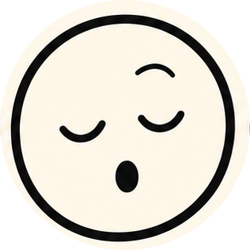
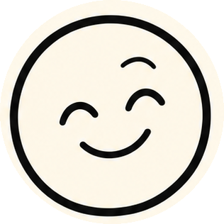

09 · iPhone conversation demonstration
Three scripted conversations inside the site's device frame, in the app's Talk to Doddy pattern: a card for every change, nothing done until you tap.

Doddy, what's happening today?
Well, your meeting started 15 minutes ago. Excellent start.
Today
- Team meeting09:00 · started
- Dentist12:30
- Call Mum19:00
Want me to draft a "running late" to Ola? You send it.
Calendar read only with the Calendar switch on. The draft opens in Messages; Doddy never sends.

Remind me to call Mum tomorrow.
Tomorrow, ten? Tap Add and it's in Reminders.
Add reminder?
Call Mum · tomorrow, 10:00
Added to Reminders · read back 22:31
What Doddy did · 1 change
Done. Say hi from me. Actually don't, that's weird.
The app's real rule: a card with Add, nothing stored until the tap, then read back from Reminders and listed under "What Doddy did".

What was the name of that place I mentioned last week?
Chmielna. Green door. Your words, not mine.
Found in your notes
"The pierogi place on Chmielna, the one with the green door."
- Saved4 Oct 2026, 13:12
- SourceYour typed note
And the one Marta said?
I couldn't find that in your saved memories.
Saved notes are the one built feature: exact words, date and source, and the real "couldn't find that" line when there's no match.
Scripted demonstrations. The real screen is the app's Talk to Doddy view, which may differ; status words (Listening, Speaking) are the app's own.